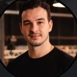
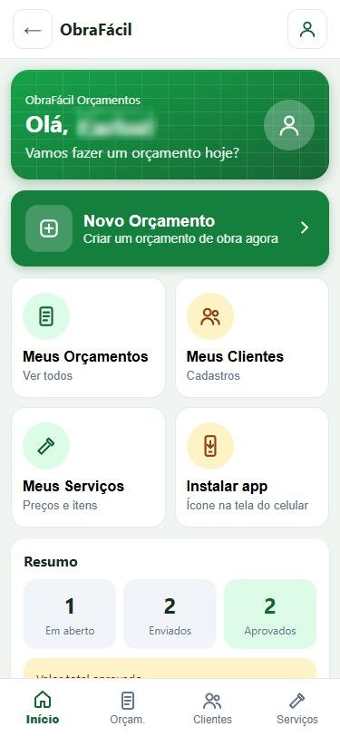
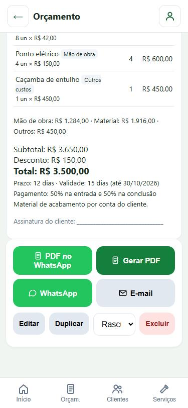
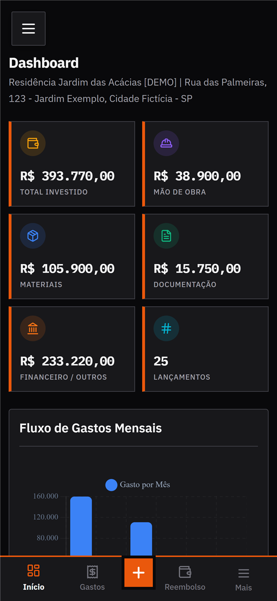
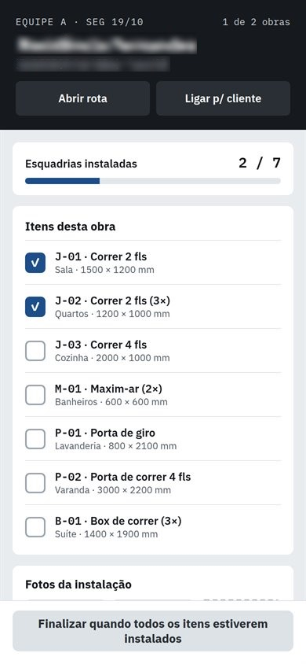

2024 até hoje
Gerente de Projetos
ROIT
Coordeno clientes, Produto e Desenvolvimento em vários projetos ao mesmo tempo. Facilito as decisões, alinho expectativas e mantenho todo mundo andando na mesma direção até o go-live.

Áreas de atuação
São mais de 10 anos de experiência em tecnologia, com uma trajetória que começou no suporte, evoluiu para implantação de ERPs e liderança de equipes, passou pela criação e evolução de produtos digitais como PO e hoje envolve a gestão de projetos de automação fiscal e financeira, do levantamento de requisitos ao go-live.
Ciclo concluído
Nos três últimos cargos, além de entregar, fui responsável por puxar o time junto.
2024 até hoje
ROIT
Coordeno clientes, Produto e Desenvolvimento em vários projetos ao mesmo tempo. Facilito as decisões, alinho expectativas e mantenho todo mundo andando na mesma direção até o go-live.
2023 a 2025
Nunes Construções e Esquadrias
Liderei um time enxuto de 2 desenvolvedores: visão do produto, prioridades claras a cada entrega e trabalho lado a lado para destravar o que impedia o time de avançar.
2024
ACSN
Liderei a equipe de suporte técnico: capacitei analistas e revendas, fiz a gestão de SLA e acompanhei a performance mensal do time para melhorar o atendimento.
ROIT, tempo integral, remoto
Nunes Construções e Esquadrias
ACSN Desenvolvimento de Software, Salto, SP
Problemas reais, o que eu fiz para resolver e como ficou o produto.
App para o profissional de obra montar um orçamento em minutos e mandar para o cliente em PDF ou pelo WhatsApp.


Do primeiro acesso ao orçamento pronto para enviar, com dados anonimizados
App para controlar tudo o que entra e sai de uma obra: gastos, profissionais, fornecedores, reembolsos e projetos, em um só lugar.

Dashboard no computador e no celular, com dados de demonstração
Sistema que acompanha cada obra de esquadrias de alumínio do orçamento à entrega, passando por medição, corte, montagem e instalação.

Painel da semana no computador e app do instalador no celular, com dados anonimizados
Implantações da esteira Invoice-to-Pay: recebimento de NF-e, NFS-e, CT-e e invoices até o contas a pagar, integrada ao ERP do cliente.
Implantação de ERP (Connect Store), loja virtual e PDV para uma carteira ampla de clientes do varejo.
Do primeiro atendimento como analista júnior à supervisão da equipe de suporte de ERP, PDV e e-commerce para clientes e revendas.
Desafios de produto resolvidos de ponta a ponta: diagnóstico, priorização, solução, regras de negócio e plano de execução.
Desafio de entrevista técnica para Produto: uma loja online perdia 80% dos carrinhos. Descobri onde e por que as pessoas desistiam e montei um plano de 90 dias para recuperar de 250 a 375 pedidos por mês, sem gastar mais com anúncios.
A maior queda: 45% saíam ao ver o frete
Quatro papéis que já exerci na prática, não só no título.
Discovery com quem vive o problema, histórias de usuário com critérios de aceite e backlog priorizado. Trabalho lado a lado com os desenvolvedores.
Defino visão e escopo do MVP, decido o que entra e o que fica de fora e acompanho a evolução do produto depois do lançamento.
Conduzo vários projetos e clientes ao mesmo tempo: cronograma, riscos, dependências, stakeholders e entrega até o go-live e pós-implantação.
Mapeio o AS IS e desenho o TO BE em BPMN, escrevo o BBP e traduzo regra de negócio em parametrização de ERP e integrações.
O mesmo caminho para um MVP novo ou para uma implantação em cliente grande.
Converso com quem vive o problema e mapeio o processo como ele é hoje.
Transformo o que ouvi em requisitos, regras de negócio e critérios de aceite.
Corto o escopo até o mínimo que já resolve. O resto vira roadmap.
Acompanho o time no dia a dia, testo junto e removo bloqueios.
Acompanho o go-live, meço o resultado e ajusto a próxima rodada.
Estou aberto a vagas híbridas e remotas.